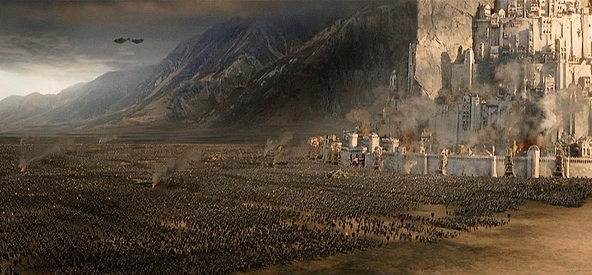

⚔️ Jaredites¶
Estimated time to read: 14 minutes
Timeline¶
The Book of Mormon Jaredite King List gives only 7 exact dates (lifespans and reigns) for the Jaredite Chronology. The only real markers we have to build a working chronology from are firstly, the date of the “dearth†or famine and megafauna extinction given in the narrative of Heth Ether 9:30–34. It’s important to note that it’s well established that Mastodons and other megafauna went extinct in most of continental North America at about 11 - 8,000 BC and the paleoindians role in killing them off and eating them amidst a major climate event (as explained in Ether 9:30–34) is well documented in the archaeological record, so we must consider the possibility that if radiocarbon dates are not off (which they certainly may be for that period), then there is likely a large unknown break of thousands of years between the Jared to Heth, and the rest of the timeline.
— Book of Mormon Chronology: Jaredite Timeline, Gathered In One
Seeing God¶
The brother of Jared is described as having like the most faith ever, and so he was able to see God’s finger… but Joseph Smith literally just prayed once and he got to see both Heavenly Father and Jesus. Their full bodies. Should we believe this means Joseph was super, uber, ultra-specially faithful prior to the first vision(s)?
How do we get around this? We have a convenient deus ex machina of "it's revelation from God," and no one could argue against that. Alternatively, we could concede that this sure does look like biblical plagiarism.
Wooden Submarines¶
Giving this any amount of critical evaluation makes it sound more ridiculous than inspiring or faith-promoting. No propulsion, no steering, constant flipping, no food stores, no potable water, no waste disposal, and no solid way to tell time or know how long it took. I'm not sure they knew how to measure the number of days- did they write it down, or just talk out a consensus once they made landfall? If it was written, what was it recorded on? Etched on the inside wall between the smears of cow poop?
BoM describes Jaredites as having been “led by God from the Tower of Babel to the Americas.†I’m open to correction, but my google-sleuthing led me to the Tower of Babel being in Iraq, near Baghdad. I hope I'm not being bamboozled by some kind of tourist attraction.
Personally, I've never hiked more than ~8 miles in a day, and I've had adequate hydration, modern footwear, etc. I don’t know how feasible it is to travel from Baghdad, Iraq to Beirut, Lebanon (~580 miles of desert), or to Tel Aviv, Israel (~650 miles of desert), but that sounds non-trivial to me.
Then comes the Atlantic. Closest point by my eyeball estimation is Cape Cod in Massachusetts. If they went in a straight line, it would be a minimum of 2700 + 3433 = 6133 miles.
Ether 6:11 records the duration of time as being 344 days. 6133 miles is a low estimate, assuming straight lines. 6133 / 344 = ~17.8285. Assuming they had propulsion, navigation and steering, I might call sailing 18 miles per day “not unreasonable.†However. It’s nearly a year of constant flipping around with only glowing stones as light. What did their animals eat for a year?
I've heard the critical claim that the deseret beehives were in the barges as well. By my understanding, the bees were explicitly mentioned on the coast as the barges were being built, and never mentioned after. Were the hives brought along? Maybe. It would seem silly to bring the hives to the coast and just leave them there. I hope they were left behind, though, I wouldn't want to be in a submarine that is constantly flipping with stinging insects inside. That's one point that FAIR and I can agree on.
Nephi & friends were able to invoke divine intervention so they wouldn’t have to cook their meat. That necessitates they still had to acquire the meat, though. I suppose the Jaredites got some fish when the barge flipped? How did they handle waste? A week in, and every square inch of the inside would be covered in poop. An hour in and they've got some stressed livestock, probably trying to break out. As soon as they see sunlight through the hole in the top, that bull isn't going to patiently wait for the humans to allow it to exit, it's going to make every effort possible to escape, trampling anything in its way, not considering if there's land outside or not.
God made it all work out somehow? Cool. Very convenient. He also helped the Jaredites find their car keys, I bet.
This is such a bizarre story. If it was presented as myth rather than objective history, I don't think it would warrant much scrutiny.
How many people died?¶
He saw that there had been slain by the sword already nearly two millions of his people, and he began to sorrow in his heart; yea, there had been slain two millions of mighty men, and also their wives and their children.
— Ether 15:2
"[N]early two million" men died, "and also their wives and their children" who were not counted in the two million. Deaths are casualties, but not all casualties are deaths. I recognize that the Book of Mormon did not adhere to the North Atlantic Treaty Organization (NATO), but its military agency for standardization defines a casualty as "[i]n relation to personnel, any person who is lost to his organization by reason of being declared dead, wounded, diseased, detained, captured or missing." To have two million soldiers dead does not include other nonfatal casualties. So if the count of bodies examined and confirmed to be dead tallied up to two million, can we assume that there were other "mighty men" incapacitated or unavailable for whatever other reason?
Visualizing one million is not something that humans need to do very often, so broadly speaking, we're not very good at it. At some point, our brains switch from comprehending a specific quantity to an abstract "quadspillion" hyperbolic big number. (1,2, 3, 4) I don't know where that generalizing threshold is, but I will argue that 1,000,000 is beyond that point. I can only really speak for myself, but when I read that two million "mighty men" passed away, I just imagine some non-specific, hyperbolic big number. Were I to stop and try to really consider how high of a number that is, I encounter some logistical problems.
Perhaps not all men were of age to fight a hand-to-hand war. Assuming we have 2,000,000 mighty men who had been killed, most but not all of them would be married. I'll assume a range of 2,000,000 * (0.75) = 1,500,000 wives of the 2mill soldiers. Next, add an average of 2.5 kids. We're looking at (2 + 1.5 + 2.5) * 1,000,000 = 6,000,000 deaths just of the families of the "mighty men" capable of fighting, not counting those too elderly to fight, nor the workforce & governance back home to keep the economy from crashing completely. I don't know what life expectancy to anticipate for the days of Jaredites, so maybe I could extrapolate another 1 million for those not in the fight? Too old? Too young? Children were already counted, so… maybe 7,500,000 people and no signs at all of their existence.
On either side of this conflict, each army needs to be fed at least once per day; hopefully more, if they're to be in fighting condition. How much food was needed to sustain an army of that size? How did cargo get shipped from farm to the battlefront? All two million soldiers will need to poop. Did they have latrines? Did they understand germ theory that well in 580 BC to even think about latrines? Are there archaeological findings that suggest "this ancient civilization had a strong enough economy to sustain an army of two million or more, easily?" No? Don't you think that would be hard to miss?
Illustration¶
For illustration, we can get a fair idea of what a gathering of two million concert attendees looks like. In May 2025, Lady Gaga performed at Copacabana Beach, Rio de Janeiro Brazil. The link given there zooms out to see the crowd for only a few seconds, seeing how the crowd isn't the attraction, but you can glimpse that it's difficult to capture that number of two million people even from whatever height the footage was taken from. Go look.
Now... Imagine, ostensibly, twice that size seeing how ~2 million "mighty men" on one side of the conflict had died. Imagine that many people, each one engaged in hand-to-hand combat, and completely vanishing with no archaeological trace whatsoever.
Folks who appreciate sports more than I do might be interested in a crowd of approximately four million in Buenos Aires, Argentina in celebration of the 2022 World Cup victory. I've only seen the photos in this NPR article, but... that's a sizeable group. Imagine each one waiting their turn to swing their weapon wherever the frontline of the conflict was. Then imagine that number of deceased soldiers just disappearing.
I don't know what's a non-violent idiom to use in place of "beating a dead horse", but I recognize that I'm belaboring this point. Think back to the classic film trilogy of The Lord of the Rings. It had some visual spectacles of a large-scale war in a fictional, fantasy scenario. To be clear, I'm using this to visually depict a number of footsoldiers—I don't think there were Uruk-hai nor Nazgul in the Book of Mormon, unless I fell asleep during that part of seminary.

When the combined forces of Mordor siege against Minas Tirith, we see an imposing fortress being attacked by numerous footsoldiers comprising of a variety of unified factions and species' that I won't try to list (or spell.) Exact numbers aren't explicit, but the invading forces under Mordor number from 18,000 + to tens of thousands. I don't know what's a reasonable estimation. Thirty thousand, maybe? How many tens of thousands would you guesstimate to be visible in the above image? Arguably a smaller number than two million.
If I were to generously round up the Battle of the Pelennor Fields' invading forces to be fifty thousand, we'd have to conclude that the Book of Mormon depicts a battle with casualties deaths 2,000,000/50,000 = 40 times larger.
How big of an army would you need to end two million lives? 2.1 million? Don't forget that since this is a big number that my lizard-brain doesn't like, just adding that decimal for a numeric advantage is one hundred thousand additional soldiers; twice that of an arbitrary guesstimation of Minas Tirith's invading force. Two million died on one side. How many died on the other side? Assuming they were comparably matched, this means we should see a battlefield with ostensibly four million corpses of fallen soldiers.
Yet there is not one scrap of evidence to be found.
WW1¶
Let’s compare that to battle deaths on the western front in the First World War. Over 4 years, about four million men died on the western front. That’s 4 years of intense artillery fire, machine guns, accurate rifles, poison gas, etc resulting in just over four million deaths, not including over 16 million wounded (casualties.) If we narrow down our scope to the Battle of Verdun, we're looking at 715,000 - 755,000 casualties spanning nearly ten months. The above passage in Ether doesn't explicitly outline a time frame for the two million deaths. Maybe it was over eight years? I have no way of knowing. I do feel confident that the Jaredites didn't have M1919 Browning .30 caliber automatic machine guns mounted on jeeps, and so in order to kill two million, it will necessarily take longer than World War 1's western front.
Actually, you know what— six to seven million, as estimated by the mighty men plus wives plus children, is a number that has a pretty direct comparison to the number of Jewish people killed during the holocaust. To be clear, the only comparison I'm making here is the number of deaths, no further implications other than scale. Imagine numerous deaths on the scale of the 1940's holocaust, possibly greater, A) happening around 580 BCE, and B) just... poofing away. No mass graves to be found.
The idea that a bronze age civilization would be capable of inflicting death on a holocaust scale and then leaving absolutely no trace is patently absurd. That is such a high number to leave zero evidence whatsoever. The fact that the entire civilization conveniently annihilated itself before the Nephites arrived is even more ridiculous.
How did they die?¶
As mentioned a moment ago, World War 1 was able to mete out such a grand scale of death so quickly given the available technology. I feel pretty confident that Jaredites did not have fully automatic machine guns, nor bomber planes. I imagine that the technology available to them in 580 b.c. would probably be clubs or pointy sticks, but Mosiah 8:8-11 demonstrates that Jaredites had enough knowledge of metallurgy to create armor of brass & copper, and swords out of what I assume is iron, given the rust. I can assume they have archery technology, given that archaeologists can find arrowheads from 70,000 years ago (but no traces of ancient American holocaust-scale mass deaths.) We're reading about battles that result in two million soldiers dying from melee weapons, and maybe ranged archers.
Have you ever been to a football stadium? A concert? An international airport? Some kind of convention? Have you stood in a group of humans counting five hundred or more? Imagine being one of two million people, ready to engage in hand-to-hand combat. It's unusual for modern people to be in a group greater than ten thousand, as were the size of Moroni's battalions. Now imagine walking to the parking lot from the stadium after the ball game ends. It would take you hours to walk the distance of a quarter-mile.
Do you see a logistical problem here? If your battalion is greater than, say, three hundred people, the fight is going to be akin to waiting in line for there to be a large enough gap for you to even swing your weapon. After standing in the crowd for four hours dodging enemy arrows raining down on you, you can approach the frontline, and climb over the growing pile of maimed bodies at the single line of conflict. Backing out of this hypothetical, now envision these 7 million bodies just vanishing without a trace.
Sounds to me like it might just be made up.